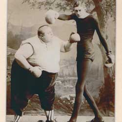

|
| Home | Talent | Cosmetic | Deformity | Abnormal | Ethnological |
Skinny Those skinny or very thin were also put on display. As stated about fat people, many people are thin today, a testimate that anyone could really be in a freak show. Oddity Fat & Skinny Man, shown in the image above, were famous in the early 1900’s freak show boxers. Why? Because of the severe contrast between the two bodies. One was fat and short, and the other was tall and skinny. They were presented to the audience in an artistic and comedic way; neither of them ever got knocked out on stage, but they sure did make the audience laugh. |